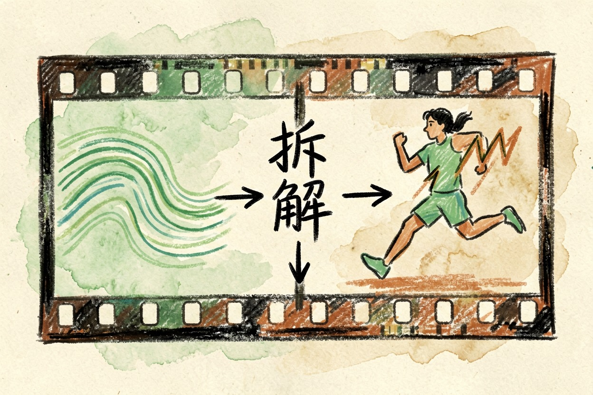
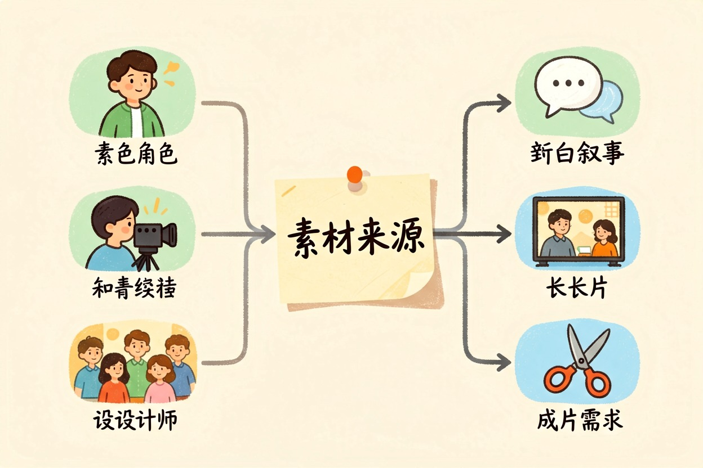

Vidu 好用吗？国产视频模型的实际使用感 — Learntide
有固定形象要反复出镜，它就有用武之地；只是想随便试试文字生成视频，换谁都一样。
Vidu 好用吗：先说清它的强项
Vidu 好用吗？它最拿得出手的是参考图能力，给几张图就能把同一个角色带进不同镜头，这在国产视频模型里不多见。
其他方面属于第一梯队的下沿。画质、时长、运动幅度都能用，但没到让人惊艳的程度。
所以它的价值很明确：你手上有固定形象，需要它反复出现，Vidu 值得试。纯文生视频碰运气，选谁都差不多。
参考图和角色一致性
上传几张同一角色的图，再写提示词，出来的人脸和服装能大致对上。这一点解决了 AI 视频最大的痛点之一。
「大致」这两个字得强调。发型、配饰、衣服细节仍会飘，正脸稳、侧脸容易变。适合做风格统一的系列短片，不适合做严格的角色动画。
参考图质量直接决定结果。糊的、光线杂的、带复杂背景的图，效果会明显掉。
参考图准备清单
- 3 到 5 张同一角色，正面 1 张、四分之三侧 2 张、全身 1 张
- 统一光线，避免一张逆光一张顶光
- 背景尽量干净，纯色最好，杂物会被学进去
- 分辨率不低于 1024，别用截图和二次压缩过的图
- 服装保持一致，想换装就重新准备一组多角色同框仍然不稳。两个人以上，脸互相串的情况时有发生。
动态幅度和画面稳定

慢镜头、轻微位移、镜头缓推，这些它做得干净。风吹头发、水面波动这类细节也还原得不错。
一旦提示词里出现跑、跳、转身这类大动作，肢体就容易畸变。这是目前所有同类模型的共同短板，Vidu 没有例外。
有个取巧的办法：把大动作拆成两段小动作，分别生成再拼。畸变率会低不少。
物理感中规中矩。物体碰撞、布料下垂、液体流动，看着像那么回事，仔细看仍有假。
镜头语言比较听话。写明固定机位或缓慢环绕，它一般会照做，不太会自作主张切镜头。
实际用起来的几个坑
生成时长有限，做长片必须拼接。拼的时候要注意色调，前后两段的色温经常对不齐，得回剪辑软件统一调。
排队时间不固定，赶稿别踩晚上高峰。免费额度用完后的定价，下单前去官网价格页确认一次。
生成结果会带标识，商用前先看清平台的授权条款，别默认可以随便投放。
失败率要计入成本。一条能用的片子，前面通常压着好几条废片，这是这类工具的常态。
谁该用，谁该等一等

有固定 IP 形象的账号、做系列短片的团队、需要概念演示的设计师，它现在就能用起来。
要做叙事完整、人物有对白的成片，建议再等等。现在硬做，后期修的时间比重拍还长。
打算把它当唯一工具的人也得掂量。它更适合当素材来源，成片还得靠剪辑软件收尾。
先用免费额度跑三条同题材的片子，好坏一眼就知道。别看官方演示片下判断，那是从大量结果里挑出来的。Vidu 好用吗，看你有没有一个需要反复出现的形象。
本文信息核对于 2026-08-08。AI 产品的价格、免费额度与功能变动频繁，实际以各工具官网当前说明为准。